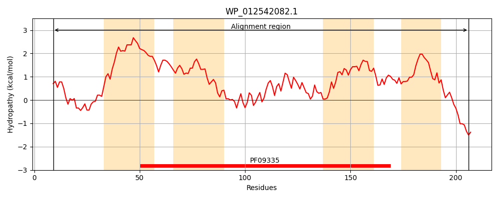
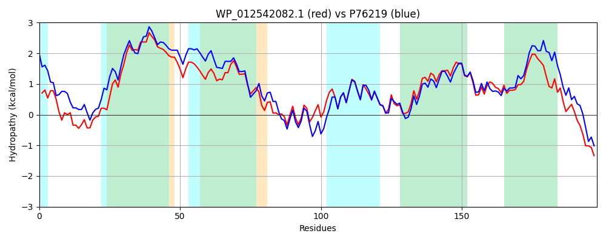

Hit Accession: P76219
Hit TCID: 9.B.27.1.1
Hit Description: gnl|BL_ORD_ID|11449 gnl|TC-DB|P76219|9.B.27.1.1 HYPOTHETICAL 26.1 KDA PROTEIN IN XTHA-GDHA INTERGENIC REGION - Escherichia coli.
Mach Len: 198
e:0.000000
Query TMS Count : 4
Hit TMS Count: 6
TMS-Overlap Score: 4.450000
Predicted Substrates:CHEBI:9090;selenite(2-)
BLAST Alignment:
Score: 699 , Bit scores: 273 bits, E-value: 7.6e-94, Alignment length: 198, Percentage identity: 69
Query: 9 HRVGLHDLLTHLHLLQDTLRHQGAWGYLVYVALFIIATLCLIPGSLLVIAGGMLFGPLTGSLLSFAAATLASSLSFLIARWLGRDLLQRYVGHTAVFQAIERGIARSGCDFLILTRLVPLFPYNIQNYAYGLTAIPFWPFTLISAVTTLPGLVIYSVMASELAREGVTLAFALKLSLAGGLLFALVQMGKRFARARRM 206
H GL DLLT L LQ +R G +GY +Y+ LFIIATL L+PGS+LVIAGG++FGPL G+LLS AATLASS SFL+ARWLGRDLL +YVGH+ FQAIE+GIAR+G DFLILTRL+PLFPYNIQNYAYGLT I FWP+TLISA+TTLPG+VIY+VMAS+LA EG+TL F L+L LAG LF LVQ+ K +AR + +
Sbjct: 22 HAFGLFDLLTDLPHLQTLIRQSGFFGYSLYILLFIIATLLLLPGSILVIAGGIVFGPLLGTLLSLIAATLASSCSFLLARWLGRDLLLKYVGHSNTFQAIEKGIARNGIDFLILTRLIPLFPYNIQNYAYGLTTIAFWPYTLISALTTLPGIVIYTVMASDLANEGITLRFILQLCLAGLALFILVQLAKLYARHKHV 219 | Protein Hydropathy Plots: |
|---|
|  |  |
Pairwise Alignment-Hydropathy Plot:
|
|---|
|  |